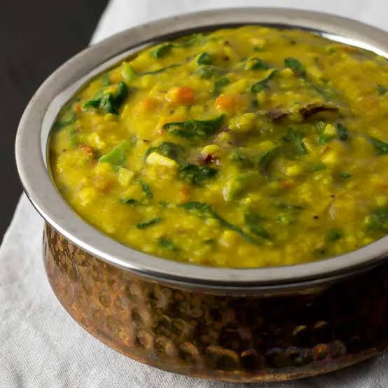

Ingredients:
For Cooking Dal:
- 1 cup toor dal (pigeon pea lentils)
- 2 cup Spinach ,choped
- 1 medium tomato,chopped
- 1 green chili, slit
- ½ tsp turmeric powder
- 2 cups water
- Salt to taste
For Tempering (Tadka):
- 2 tsp oil or ghee
- ½ tsp mustard seeds
- ½ tsp cumin seeds
- 2 dried red chilies
- 1 sprig curry leaves
- 3-4 garlic cloves, minced
- ½ tsp red chili powder
- ½ tsp hing (asafoetida)

Instructions:
Cook Dal & Spinach
Wash toor dal and pressure cook with chopped spinach, tomato, green chili, turmeric, and water for 3-4 whistles until soft.
Mash & Season:
Once pressure releases, mash the dal lightly and add salt. Adjust consistency with water if needed.Prepare Tempering:
Heat oil/ghee, add mustard seeds, cumin, dried red chilies, curry leaves, and garlic. Sauté until garlic turns golden.Spice It Up:
Add red chili powder and hing to the tempering. Stir wellCombine & Serve:
Pour the tempering over the dal, mix well, and simmer for 2 minutes. Serve hot with rice and ghee
కావలసినవిః
పప్పు కుక్ చేయండి.:
- 1 కప్పు పప్పు (పావురం బఠానీ కాయధాన్యాలు)
- 2 కప్పుల పాలకూర
- తరిగిన 1 పచ్చిమిర్చి, చీలిక
- ½ స్పూన్ పసుపు పొడి
- 2 కప్పుల నీరు
- రుచికి ఉప్పు
తాలింపు కోసం
- 2 స్పూన్ నూనె లేదా నెయ్యి
- ½ స్పూన్ ఆవాలు
- ½ స్పూన్ జీలకర్ర గింజలు
- 2 ఎండిన ఎర్ర మిరపకాయలు
- 1 రెమ్మ కరివేపాకు
- 3-4 వెల్లుల్లి రెబ్బలు
- ½ స్పూన్ ఎర్ర మిరప పొడి
- ½ స్పూన్ హింగ్
పప్పు & పాలకూర ఉడికించాలి:
తరిగిన బచ్చలికూర, టొమాటో, పచ్చిమిర్చి, పసుపు మరియు నీటితో మెత్తగా అయ్యే వరకు 3-4 విజిల్స్తో పప్పును కడిగి ప్రెషర్ కుక్ చేయండి. మాష్ & సీజన్:
ఒత్తిడి తగ్గిన తర్వాత, పప్పును కొద్దిగా మెత్తగా చేసి, ఉప్పు వేయండి. అవసరమైతే నీటితో స్థిరత్వాన్ని సర్దుబాటు చేయండి.తాలింపు సిద్ధం
నూనె/నెయ్యి వేడి చేసి, ఆవాలు, జీలకర్ర, ఎండు మిరపకాయలు, కరివేపాకు మరియు వెల్లుల్లి జోడించండి. వెల్లుల్లి బంగారు రంగులోకి మారే వరకు వేయించాలిస్పైస్ ఇట్ అప్:
తాలింపుకి ఎర్ర మిరప పొడి మరియు హింగ్ జోడించండి. బాగా కదిలించుకలిపి & సర్వ్:
పప్పు మీద తాలింపు పోసి, బాగా కలపండి మరియు 2 నిమిషాలు ఆవేశమును అణిచిపెట్టుకోండి. అన్నం మరియు నెయ్యితో వేడిగా వడ్డించండి. చిన్న